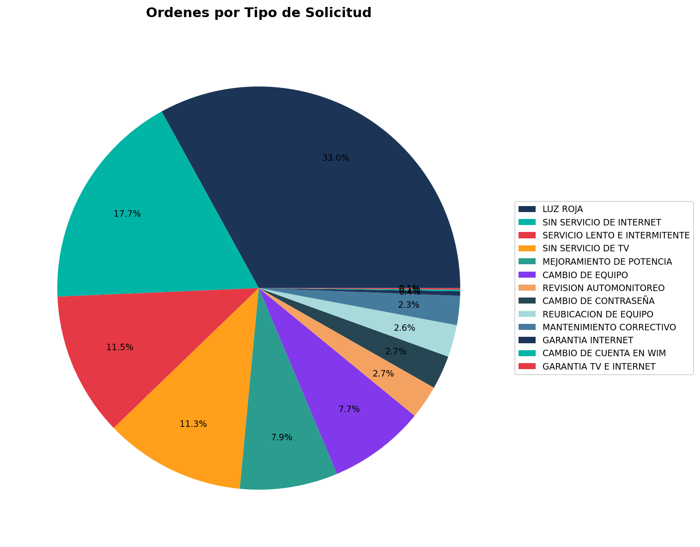
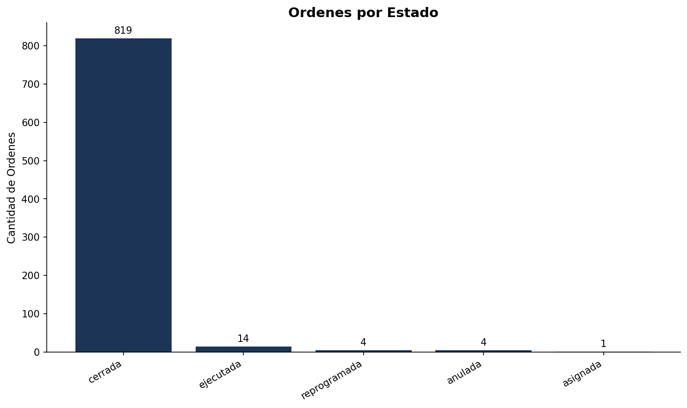
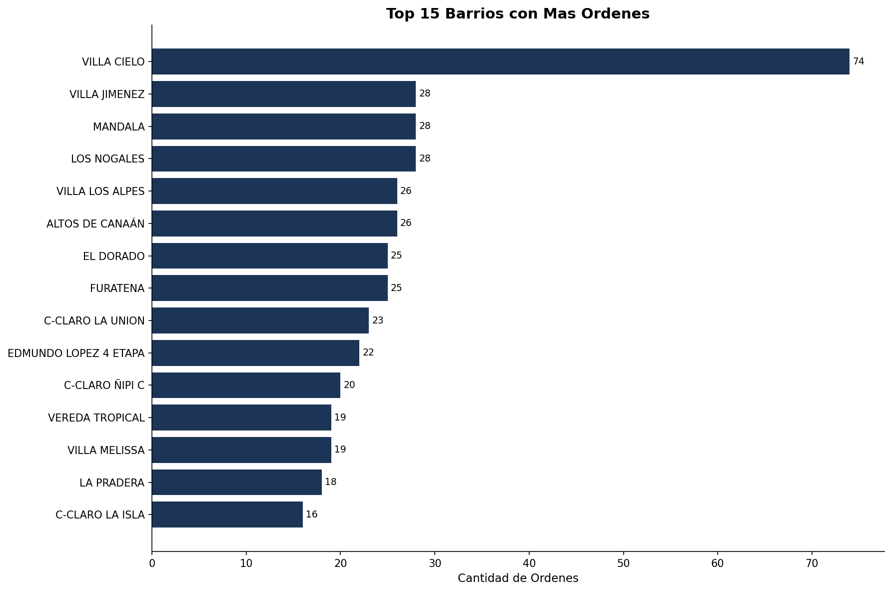
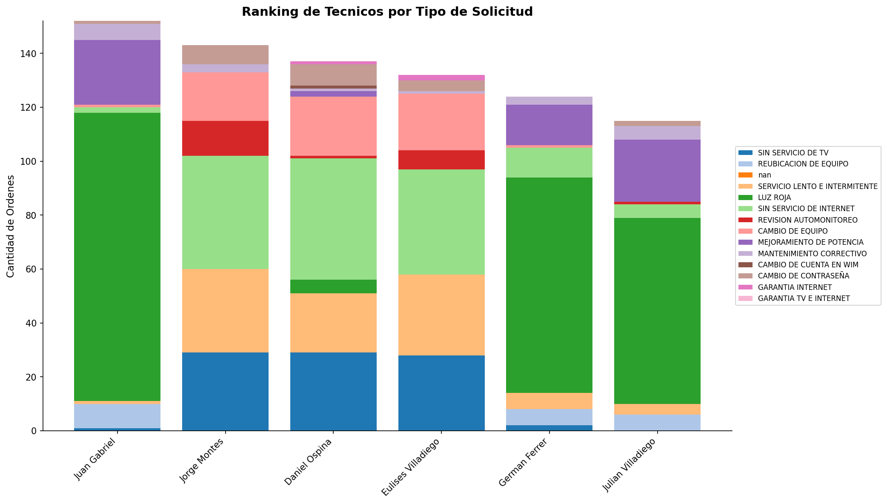
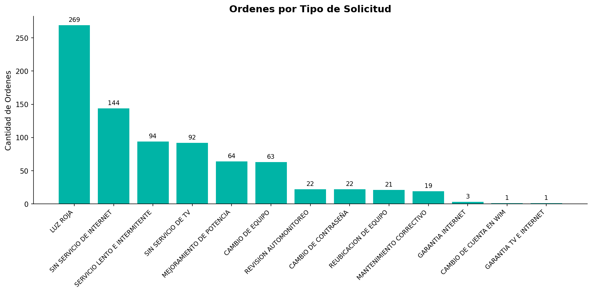
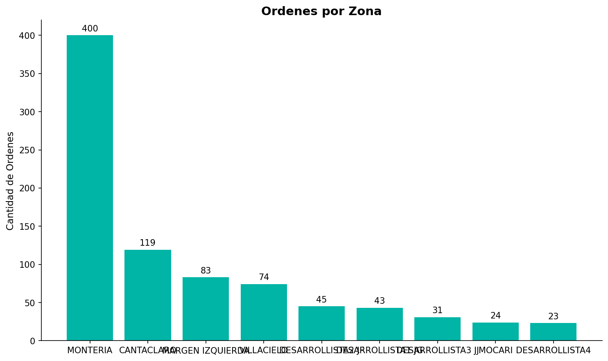

Hallazgo Principal
{{ HALLAZGO_ESTRELLA }}
{{ HALLAZGO_ESTRELLA }}
Este reporte presenta un análisis completo y detallado de las {{ TOTAL_ORDENES }} órdenes de servicio atendidas durante el período del {{ PERIODO_TEXTO }} por la Corporación Regional de Telecomunicaciones.

Figura 1: Distribución por Clasificación

Figura 2: Estado de las Órdenes
| Indicador | Valor | Observación |
|---|
Análisis comparativo de la creación vs. el cierre de órdenes por día. Este gráfico permite identificar picos de demanda y la capacidad de respuesta del equipo técnico.

Figura 3: Comparativa de Órdenes Creadas vs. Cerradas por Día
Distribución geográfica de las {{ TOTAL_ORDENES }} órdenes de servicio atendidas en el período. Los barrios con mayor concentración de solicitudes se presentan en orden descendente.

Figura 3: Top 15 Barrios con Mayor Volumen de Órdenes
| # | Barrio | Cantidad | Porcentaje |
|---|
Tabla 1: Top 20 Barrios por Volumen de Órdenes
Desempeño individual de cada técnico mostrando el total de órdenes atendidas, tiempo promedio de atención y participación porcentual en el período.

Figura 4: Ranking de Técnicos por Volumen de Órdenes
| Técnico | Órdenes | % Particip. | Tiempo Prom. (hrs) | Ranking |
|---|
Tabla 2: Desempeño por Técnico
Medición del promedio de órdenes resueltas por cada técnico durante los días que estuvieron activos. Este indicador permite normalizar el desempeño independientemente de los días laborados.

Figura 6: Promedio de Órdenes Diarias por Técnico (Días Activos)
Clasificación detallada de las soluciones técnicas aplicadas por los técnicos. El total de soluciones coincide con el total de órdenes: {{ TOTAL_ORDENES }}.
| # | Tipo de Solución | Cantidad | Porcentaje |
|---|
Tabla 3: Soluciones Técnicas por Frecuencia
Análisis de la distribución de órdenes según su clasificación y tipo de orden de servicio.
Figura 5: Distribución por Clasificación
| Clasificación | Cantidad | Porcentaje |
|---|

Figura 6: Distribución por Tipo de Orden
| Tipo de Orden | Cantidad | Porcentaje |
|---|
Distribución detallada por el estado actual de las solicitudes procesadas en el sistema.
Figura 7: Distribución por Estado
| Estado | Cantidad | Porcentaje |
|---|
Tabla 4: Estado de las Órdenes
Los tiempos de atención se calculan desde la Fecha de Creación hasta la Fecha Fin de Atención. Se incluyen TODAS las {{ TOTAL_ORDENES }} órdenes.
| Rango de Tiempo | Cantidad | Porcentaje | Acumulado |
|---|
Tabla 5: Distribución de Tiempos de Atención (Total: {{ TOTAL_ORDENES }} órdenes)
| Métrica | Valor |
|---|

Figura 8: Órdenes por Tipo de Solicitud del Suscriptor
Figura 9: Comparativa de Órdenes Atendidas por Técnico

Figura 10: Distribución por Zona